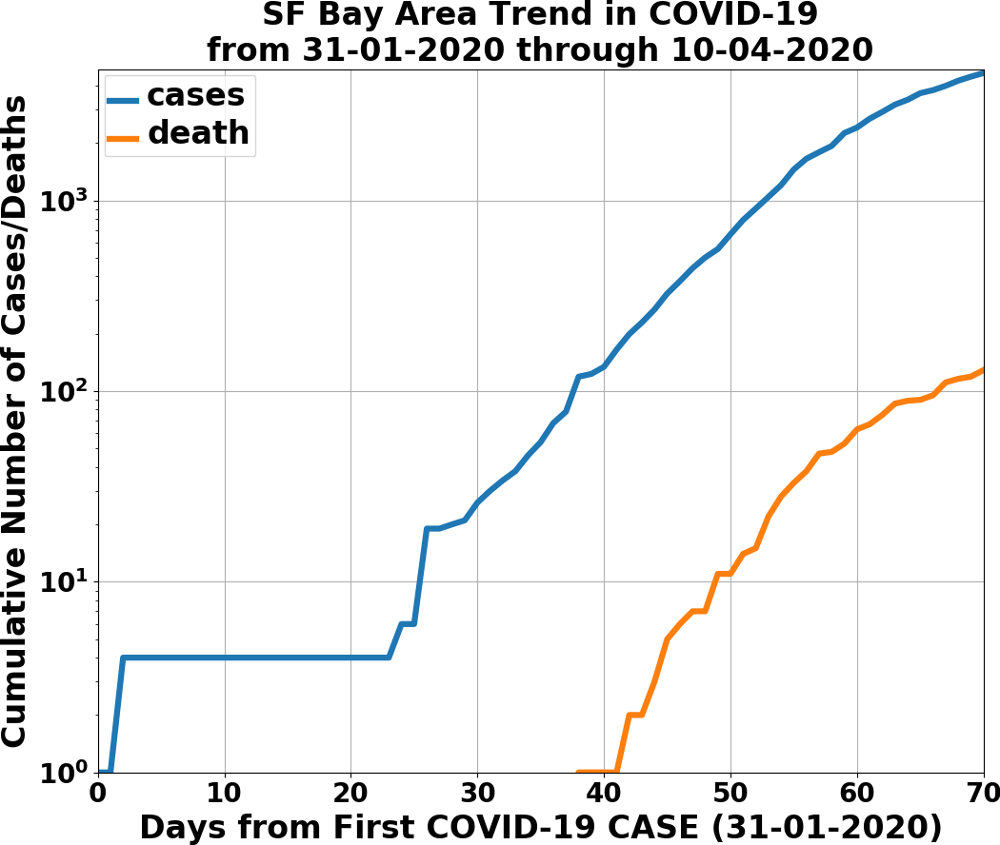
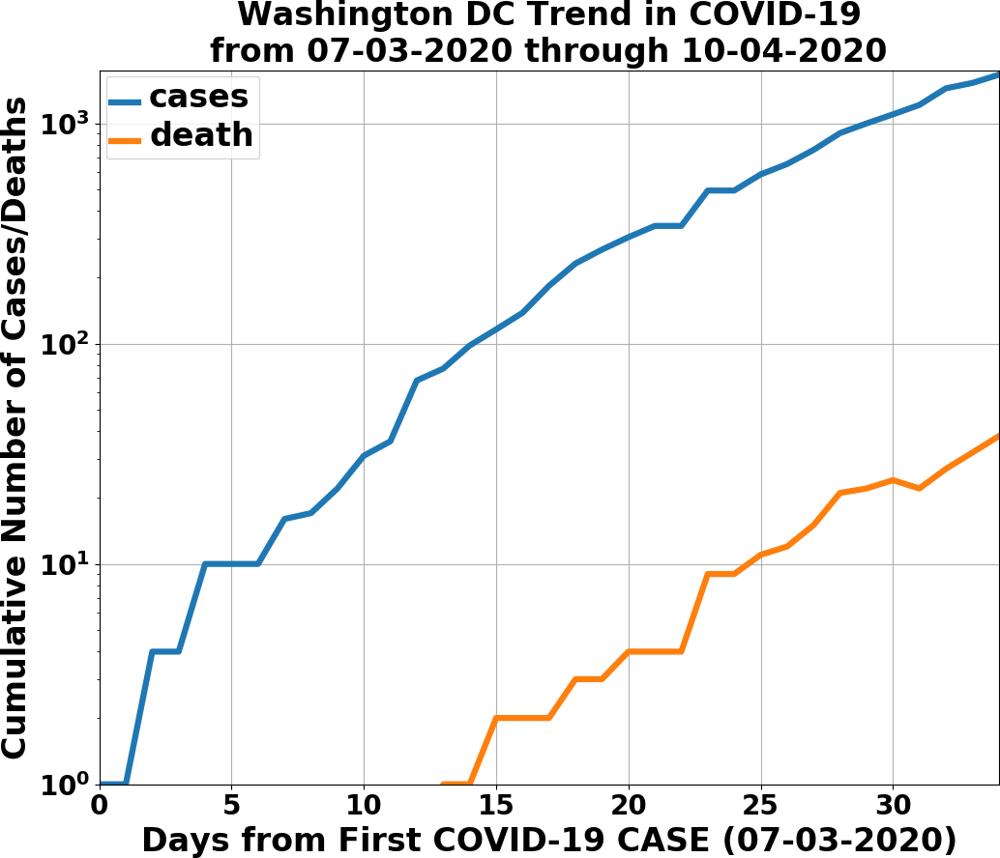
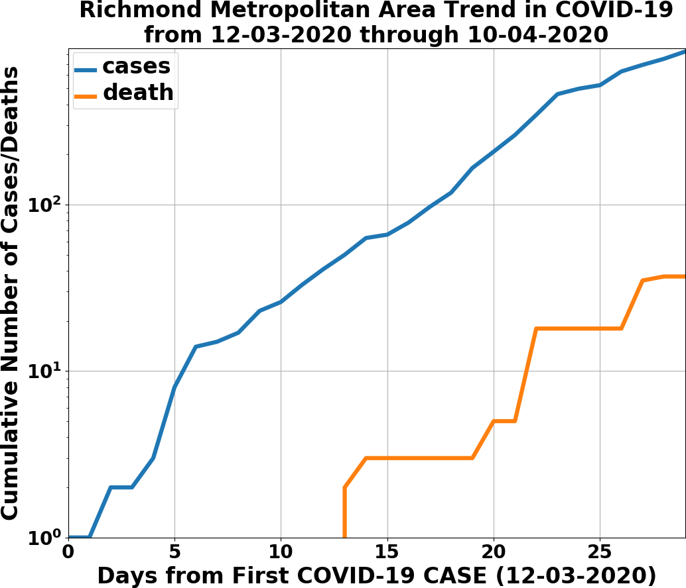
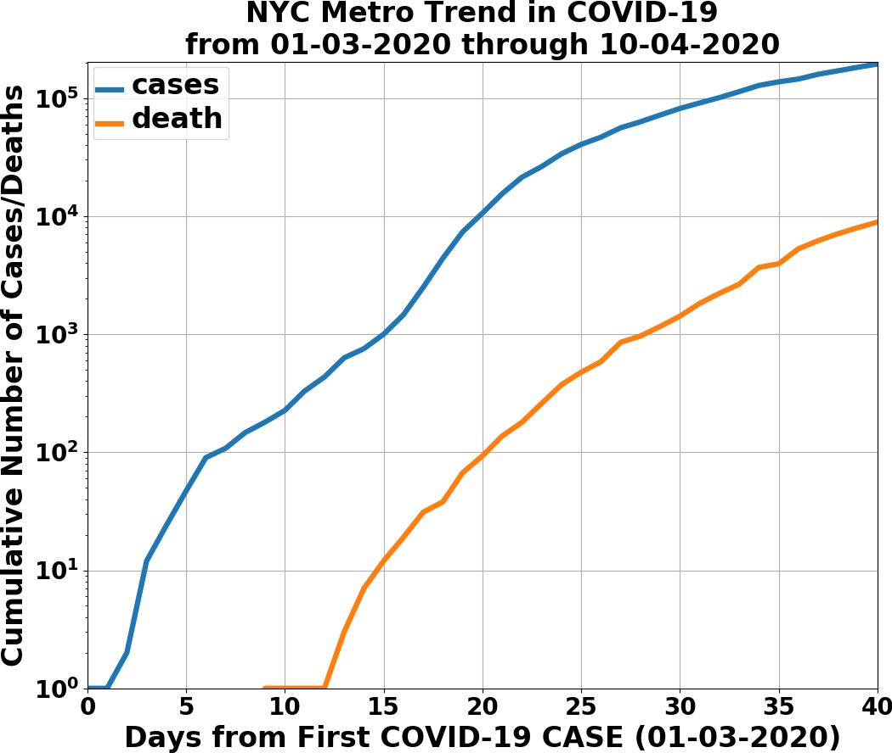
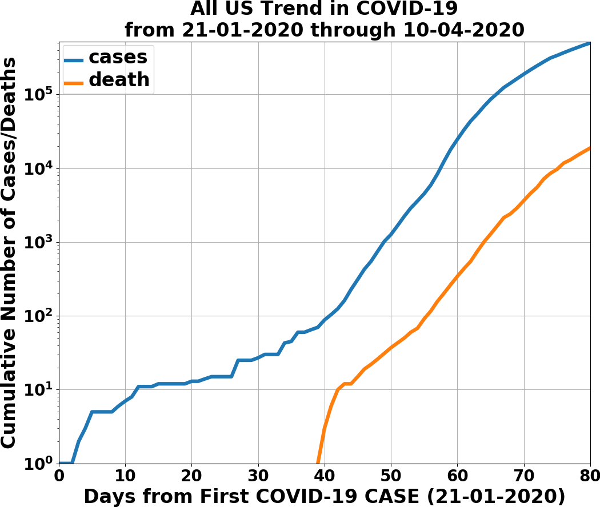

Hello world! This is my COVID-19 tracker. There is a git submodule, the NY Times COVID-19 repository, that needs to be updated frequently to get the latest data. The easiest way to update is to run this command in the checked out repo,
This is not nearly as sophisticated as what’s in ncov2019.live, and described in this New Yorker article.
The code that processes the COVID-19 recorded cases and deaths, dumps out the data into the Pandas serialized data format, and makes plots, is in engine.py. Running demo.py this way, python3 demo.py, produces the latest summary data for the Bay Area, the Richmond metro area, DC, NYC metro, and the United States (here, as of 11 APRIL 2020).
|  |  |  |
| SF Bay Area | DC | Richmond metro |
|  |  | |
| NYC Metro | United States |